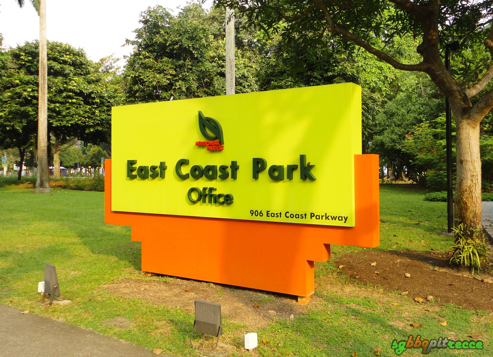

Enjoy a wide array of fun-filled activities and delicious food with your friends and family in one of Singapore’s most iconic parks!

East Coast Park is one of Singapore's most treasured urban getaways, offering an invigorating and exciting diversity of sporting, dining and recreational activities.
With the theme “Recreation for All” , the park has an activity for everyone.
Many carparks are available as seen in the picture below. For parking rates click
here.

East Cast Park offers a whole range of dining experiences!
From restaurants, bars, to hawker centres, it ensures everyone is able to find something to satisfy their cravings.
Some notable eateries include:
Central Thai
Enjoy quality & comfort halal home-style Thai & Chinese cuisine with the utmost care.
Opening Hours:
(Mon-Fri)12pm - 915pm (last order)/(Sat-Sun/P.H.)1130am - 10pm (last order)
Call 6443 5510 or click here


Jumbo Seafood
Fun fact: this iconic seafood restaurant opened its first outlet at East Coast Park in 1987. Most of us need no introduction to the food.
Go straight for the chilli crab and mop up the delish gravy with deep-fried golden buns. Other highlights include bamboo clam steamed with minced garlic, cereal prawns and seafood fried rice!
Opening Hours:
(Mon-Fri)4.30pm - 10pm (last order 9.15pm)/(Sat-Sun/P.H.)1100am - 10pm (last order 9.15pm)
For bookings call 6442 3435 or click here.


East Coast Lagoon Food Village
Seafood by the beach – what could be better? This is the place to hit up if you’re looking for a spot to have a meal with a large group of friends.
Plenty of stalls specialise in barbecued seafood, as well as satay and other local delights, so take your pick.
Don’t forget to order a side of rojak for some variety.


Hit The Beach On Wheels
Stretching over 15km, the best way to explore the park is on two wheels. Cover the entire belt all the way to Marina Bay by cycling the stretch.
And if you didn’t bring your bicycle, easily rent one from any bike rental shops scattered around the area! For a rush of adrenaline, you can also wheel through the park on rollerblades, roller-skates or scooters.
Singapore Wake Park
Wakeboarding is an invigorating water sport that allows you to surf on a specifically designed board whilst being towed by a high-speed craft. Singapore Wake Park is brilliant for this!
The place features three cable systems for beginner, intermediate and full-sized courses. Thrill-seekers of all ages are welcome – including families! Equipment and gear including kneeboards, wakeboards, helmets and vests are provided.
For rates and booking click here.


Marine Cove Playground
This 3,500sqm playground is the stuff of dreams for kids. We’re talking about swings, rope bridges, a rock-climbing wall and a three-storey play tower that takes the shape of a lighthouse.
For toddlers, there’s a spacious area filled with talking tubes, fun mirrors and colourful drum sets.
This is a playground paradise for kids!

Camping and Barbaqueing by the beach
Ditch the usual hotel stay and set up camp here for a different kind of staycation. Do take note that only Area D and Area G are eligible for camping purposes.
While you’re at it, book a BBQ pit to make your camp sleepover merrier. Plus, who can resist the picturesque seaside view at the crack of dawn?
To obtain a camp permit, click here.
To book a BBQ pit, click here.


Many more things to do are awaiting you at East Coast Park
SO HEAD DOWN HERE TODAY!